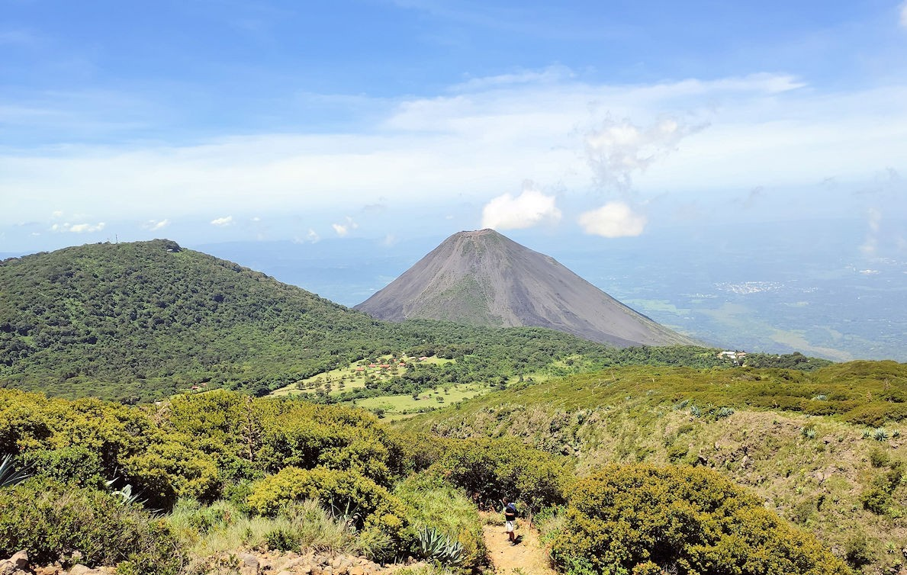
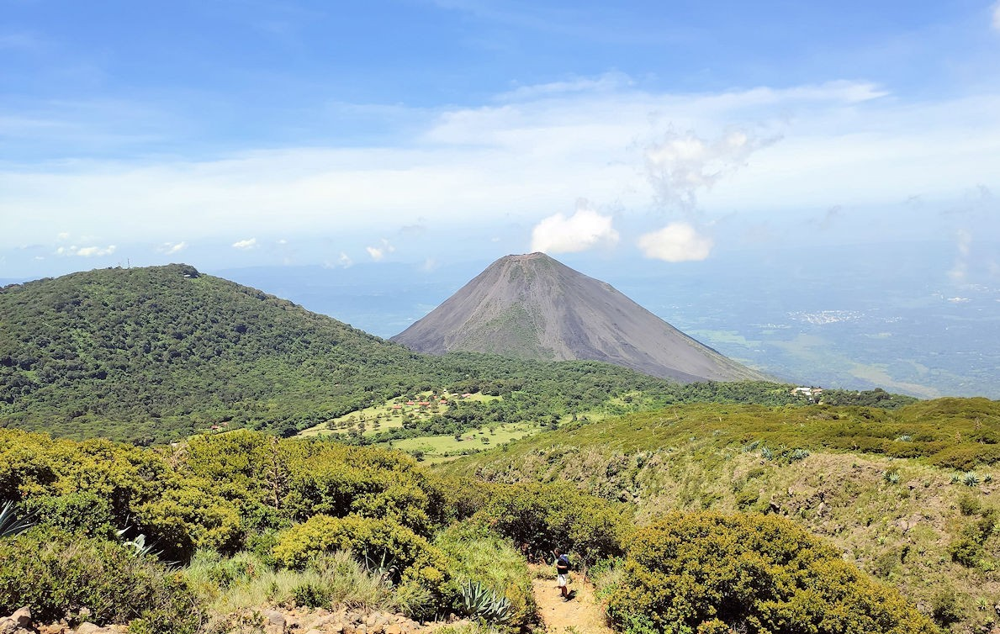

Contando con, de acuerdo a los expertos en el tema, dos mil treinta metros por encima del nivel del mar de forma aproximada Cerro Verde es un enorme atractivo natural que posee la República de El Salvador.
Una de las características de Cerro Verde que se pueden destacar en una primera instancia es el hecho de que los expertos lo han clasificado como un volcán extinto, esto significa que ha pasado una enorme cantidad de tiempo desde la última vez que entró en erupción, de acuerdo a los que estudian esta área la última actividad que tuvo Cerro Verde se presentó hace veinticinco mil años aproximadamente.

Otro elemento que se puede considerar de importancia con respecto al volcán Cerro Verde es que el mismo cuenta con un ecosistema con una exuberante biodiversidad en donde se han podido observar más de cien especies de aves.
Por otra parte, Cerro Verde posee una importante masa forestal al presentar un ecosistema con un clima frío y con mucha humedad que lo permite.

El volcán Ilamatepec ubicado cerca de la Ciudad Morena, Santa Ana, es parte de la cordillera de Apaneca. Tiene una altura de 2.381 metros sobre el nivel del mar y es uno de los atractivos turísticos naturales de la zona.
Durante años, el imponente volcán se ha convertido en ese descubrimiento para jóvenes, adultos, niños y grupos familiares que realizan largas caminatas para conocer ese bello paraje.
Una hora con 45 minutos de marcha son necesarios para llegar a su cúspide y apreciar el cráter en cuyo fondo se ha formado una laguna azufrada color turquesa.

Desde esa altura se puede observar las aguas del Océano Pacífico, el volcán de Izalco, el lago de Coatepeque, que son otros de los lugares turísticos con que cuenta El Salvador.
Las caminatas al volcán se inician en el Cerro Verde, Casa Cristal, y los turistas son acompañados por jóvenes guías de la zona y miembros de la Policía Turística.
El esfuerzo de escalar este coloso vale la pena por los imponentes paisajes y el agradable clima que se disfruta. Vale la pena deleitarse con la naturaleza, haciendo turismo interno.

 
